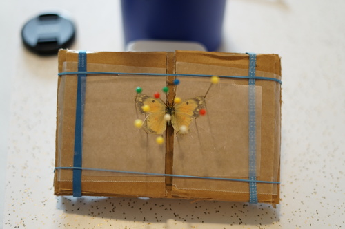
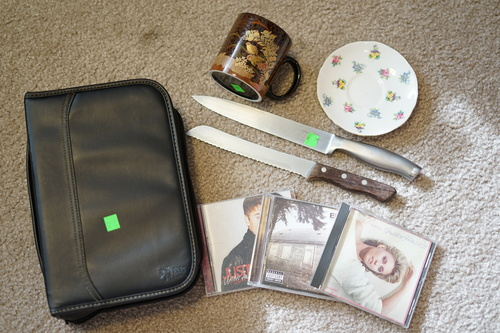
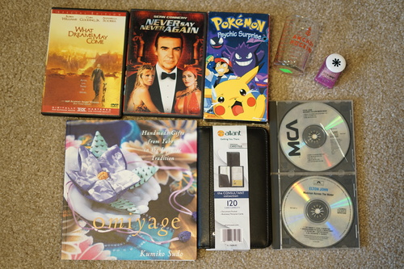

ryan and i went for a walk today and stopped by both thrift stores in town. we found a few things but also a butterfly was mostly dead in the middle of a parking lot entryway. i picked it up before it could be run over and carried it home in my hand. we tried feeding it some sugar water but it wouldnt drink and looked like it was having a seizure so i put it in the freezer for 15 min.
I wasnt very careful getting it back off the plate and i ripped off a chunk of its wing ;_; i tried pinning it on some cardboard. it was my first try and thankfully not a rare butterfly. from what i can find on the internet, it looks like a female clouded sulfur or orange sulfur butterfly
ill start with what i found a few days ago
unused! i put my disc games in it
are they quail? so cute
i have the matching bowl. where the heck is the cup?!
the handle could use some love...
im probably not going to listen to it because i hate christmas music but i love biebz
ryans. i have no interest in such things.
ryans.
and todays:
ryan's. this movie fucked me up and i dont know if i can handle watching it again
ryan's. apparently he hasn't seen it yet.
ryans.
lots of little cute crafts inside!
ryan liked this one better than the daiso one i bought him.
both ryan's.
i uh bought a ton of cute pokemon cards are rearranged my binder by artist. im too embarrassed to post what i bought though... my friend picked out a radiant collection shroomish and i didnt notice until after we got in the car! luckily i had a tropius he wanted and we were able to negotiate a trade.
i played most of the catherine endings. its a fun game! i was about to write a bunch of stuff about it here but i made a game reviews page instead
i notice a lot of people on DoA doll profiles have "provenance: COA" and it's like, do you know what provenance means. you dont need to prove your doll isn't a recast to me, but it is fun to see the hands they have gone through. its so hard to keep track of info like that. i spent a lot of time researching who the previous owners were of my 2nd hand dolls and honestly theres a couple i just cannot find. i updated my doll profiles with some history for the secondhand ones, if youre curious!